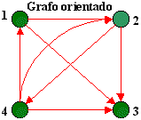

| A tabela de adjacência A tem uma implementação natural: A[v , w] é verdadeiro se e somente se o vértice v é adjacente ao vértice w. Se o grafo é orientado, interpretamos A[v , w] sendo indicado se a extremidade de v a w está ou não no grafo. Se o grafo é não orientado então a tabela de adjacência é simétrica, isto é, A[v , w] = A[w , v] para todos v e w. A representação de um grafo por conjuntos adjacência e por uma tabela de adjacência é ilustrado abaixo. |
|  |
|
|
Tabela de adjacência |
|